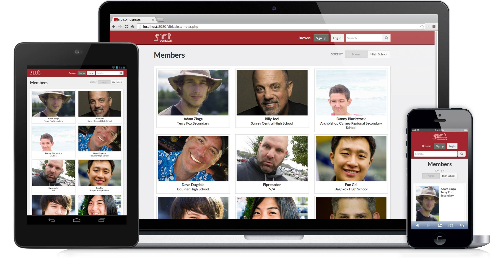
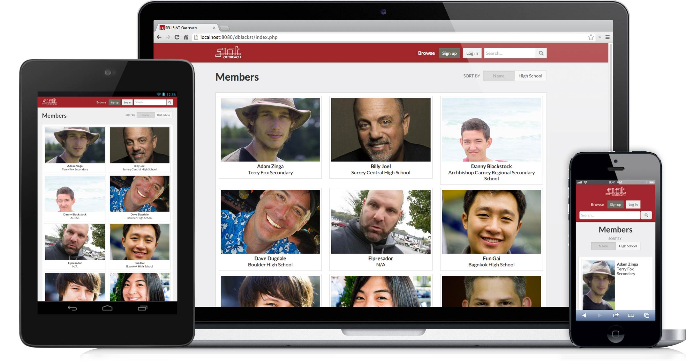

SIAT Outreach
web design + development
 

I built this website for an Internet Computing course at Simon Fraser University. It is meant to be used to provide better information about the SIAT program at SFU to visitors, especially prospective students. It aims to do this by connecting current SIAT students and alumni with high school and other prospective students.
I started this project by implementing the front-end design using HTML and SASS. I then designed and implement a basic relational database structure using MySQL. I then connected the database to the website using PHP. In development, I learned how to use SSH for securing certain pages, like log in and sign up pages.
I also learned how to use web services to add content to user’s pages. Members of the site can connect their Flickr or Twitter accounts to display their photos and tweets on their pages. I use AJAX to automatically retrieve new tweets every few seconds.
View Technical Details